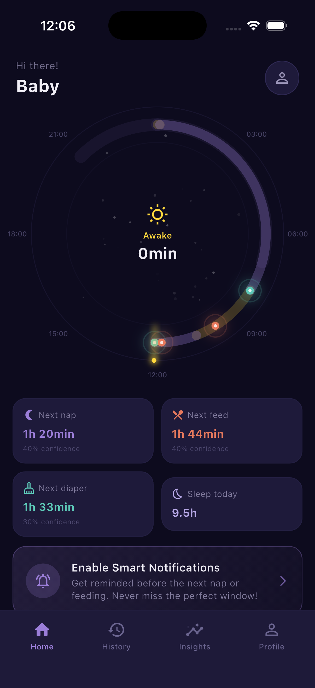
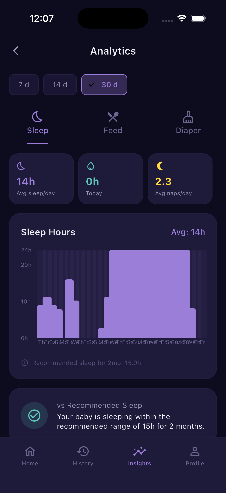
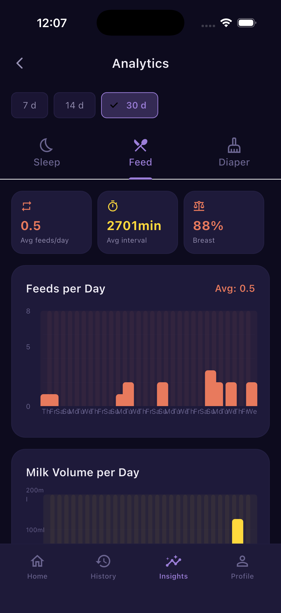
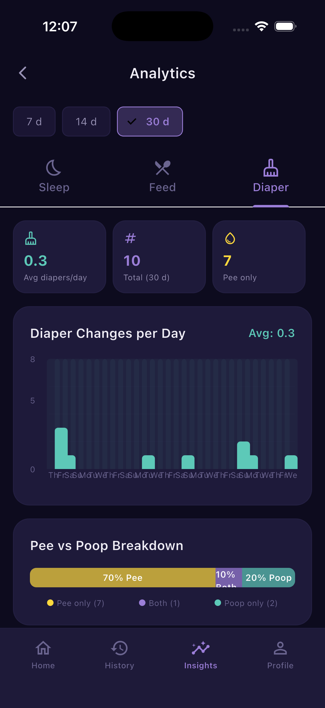

NestRoutine
6:45 PM
Nap time!
Baby may need to sleep in
15 minutes
NestRoutine
7:02 PM
Sleep window closing!
Baby may get overtired.
Put baby down now.
Sleep
Feeding
Diaper
NestRoutine
Never miss the
sleep window.